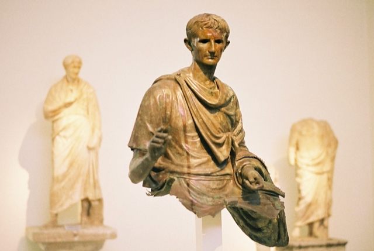

Latin and Ancient Greek tuition
Tuition will be provided remotely, with one half hour session each week for a maximum of four students to ensure personalised attention.
Language: 1 exam [90 minutes]; Literature: 2 exams (Verse [1 hour] and Prose [1 hour])
There are 200 marks in total, split equally between Language and Literature; each of the Literature papers is worth 50 marks.
The forms of regular nouns of all declensions
The forms of regular and deponent verbs in all moods, voices and tenses, including imperatives, infinitives, participles and the gerundive (excluding the future perfect, present subjunctive, perfect subjunctive, future passive infinitive, supine and gerund)
The forms of regular adjectives of all standard types
The forms of pronouns and pronominal adjectives and adverbs contained in the Defined Vocabulary List
The forms of the irregular nouns, verbs and adjectives contained in the Defined Vocabulary List, including irregularly formed comparatives and superlatives
Standard uses of the cases
Expressions of time
Comparison (including the ablative of comparison)
The use of genitive, dative or ablative where these cases are taken by verbs or adjectives contained in the vocabulary list
The cases taken by prepositions contained in the Defined Vocabulary List
Direct statements
Direct commands
Prohibitions with *noli* and *nolite*
Direct questions
Uses of participles (including the Ablative Absolute construction)
Uses of the gerundive with *ad* to express purpose
Simple indicative conditional clauses
Relative clauses (excluding *qui* + subjunctive)
Indirect statements
Indirect commands
Indirect questions
Purpose clauses introduced by *ut* and *ne*
Fearing clauses introduced by *timeo* + *ne*
Result clauses
Temporal clauses introduced by *quod* and *cum*
Concessive clauses introduced by *quamquam*
Note that the first 11 lines of Aeneid Book 1 are not part of the prescribed text